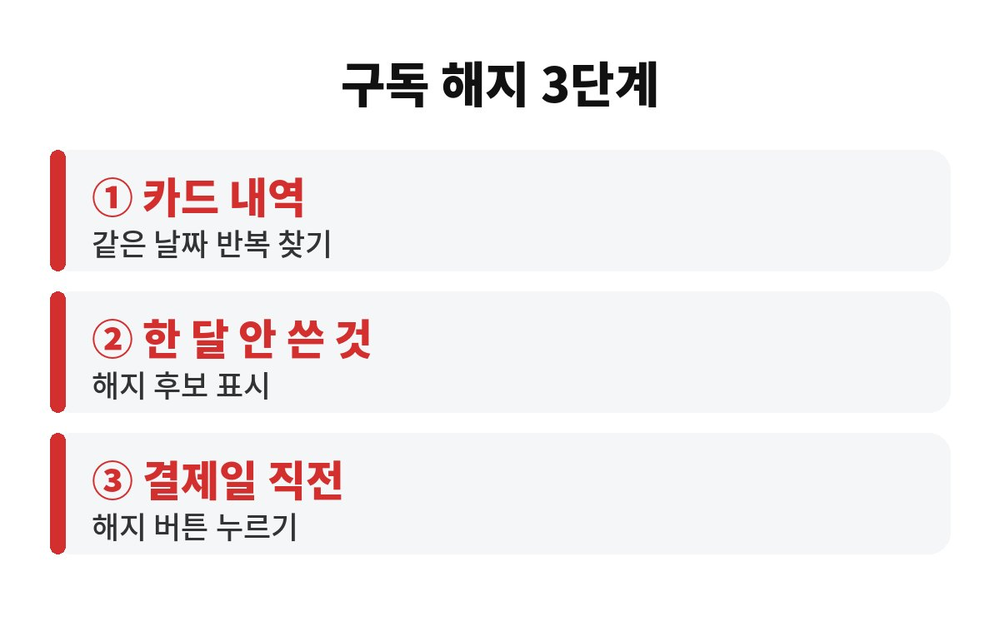
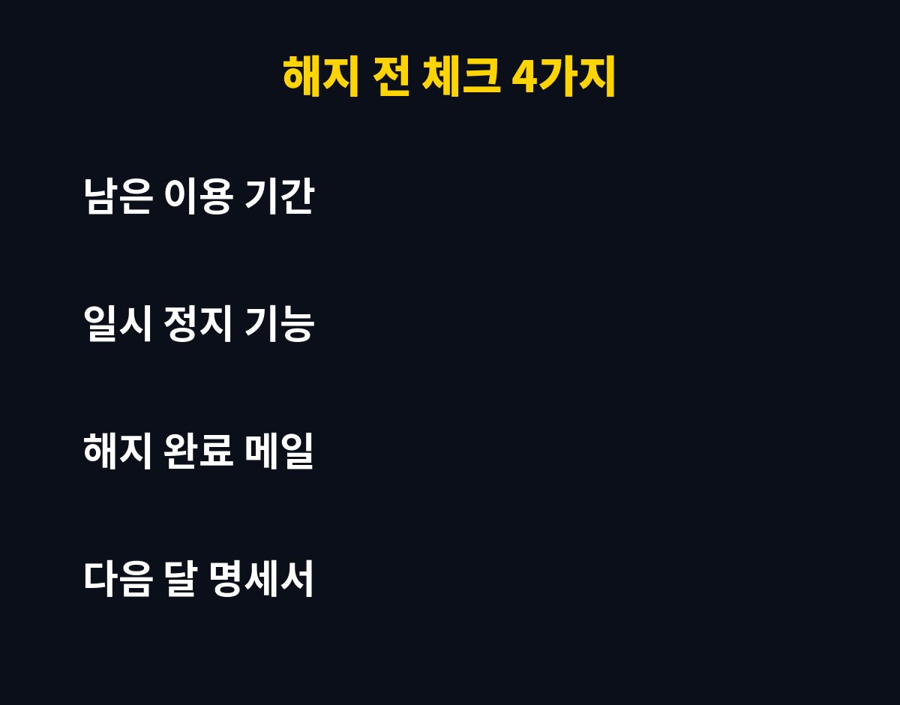

구독 서비스 해지는 5개만 정리해도 매달 고정으로 빠지는 돈이 눈에 띄게 줄어듭니다. 자동결제가 여기저기 걸려 있는 직장인이라면, 내 카드에서 무엇이 매달 빠지는지 정확히 알고 계신가요?
구독 서비스의 무서운 점은 한 번 가입하면 잊어버린다는 거예요. 영상 스트리밍, 음악, 클라우드 저장공간, 쇼핑 멤버십, 배달 멤버십까지 하나하나는 부담 없는 금액이라 그냥 두게 되죠. 그런데 이런 소액이 모이면 한 달에 커피 몇 잔이 아니라 밥값 몇 끼 수준이 되기도 합니다.
더 큰 문제는 무료 체험으로 시작한 서비스예요. 체험 기간이 끝나면 조용히 유료로 바뀌고, 우리는 카드 명세서를 자세히 안 보니까 몇 달이 지나서야 알아차립니다. 연말을 앞둔 지금은 한 해 지출을 점검하기 딱 좋은 시기라 구독 서비스 해지를 하기에도 좋아요.
제일 쉬운 방법은 카드 앱의 결제 내역을 최근 석 달 치로 열어 보는 거예요. 같은 가맹점이 매달 같은 날짜에 같은 금액으로 찍혀 있다면 그게 바로 구독입니다. 아이폰이나 안드로이드의 구독 관리 메뉴에서도 앱스토어 결제 구독을 한 번에 볼 수 있어요.
| 찾는 곳 | 무엇을 보나 |
| 카드 앱 결제 내역 | 매달 같은 날짜·같은 금액 |
| 스마트폰 구독 관리 | 앱스토어 결제 구독 목록 |
| 이메일 받은편지함 | "결제 완료" 영수증 메일 |

이 세 군데만 훑어도 대부분 나옵니다. 메모장에 서비스 이름, 금액, 결제일을 적어 두면 한눈에 정리가 돼요. 적는 순간 "어, 이게 아직도 나가고 있었어?" 하는 항목이 꼭 한두 개는 나오거든요.
모두 끊을 필요는 없어요. 기준은 간단합니다. 최근 한 달 동안 한 번도 안 열어 본 서비스는 바로 해지 후보입니다. 반대로 매주 쓰는 서비스는 유지하되, 더 싼 요금제가 있는지만 확인해 보세요.
가족이나 친구와 나눠 쓸 수 있는 요금제가 있는 서비스도 있습니다. 혼자 내던 금액을 나눠 내면 해지하지 않고도 부담을 줄일 수 있죠. 다만 약관에서 공유 범위를 허용하는지 먼저 확인하는 게 안전해요.
해지하기 전에는 남은 이용 기간도 꼭 보세요. 많은 서비스가 해지해도 결제한 기간까지는 쓸 수 있게 해 줍니다. 그러니 결제일 직전에 눌러야 손해가 없는 경우가 많아요. 서비스마다 환불 규정이 다르니 해지 화면의 안내 문구를 꼭 읽어 보세요.
일부 서비스는 해지 버튼을 깊숙이 숨겨 두기도 해요. 이럴 때는 설정, 계정, 멤버십 관리 순서로 들어가 보고, 그래도 안 보이면 고객센터 문의로 해지를 요청하면 됩니다. 요청 내용은 캡처나 메일로 남겨 두세요. 나중에 결제가 또 나갔을 때 근거가 됩니다.

한 가지 더 알아 두면 좋은 게 있어요. 구독을 해지했다고 안심하고 끝내면 안 됩니다. 해지 완료 메일이나 화면을 꼭 확인하고, 다음 달 카드 명세서에 같은 항목이 또 찍혔는지 한 번 더 보세요. 가끔 해지가 제대로 처리되지 않아 몇 달씩 결제가 이어지는 경우가 있거든요.
그리고 해지가 아깝다면 "일시 정지" 기능이 있는지 살펴보세요. 일부 서비스는 몇 달간 쉬었다가 다시 시작할 수 있게 해 줍니다. 당장 안 쓰지만 나중에 다시 쓸 것 같은 서비스라면 이 방법이 마음 편해요. 이렇게 구독 서비스 해지와 정지를 적절히 섞으면 불필요한 지출은 줄이고 꼭 필요한 편의는 지킬 수 있습니다.
마지막으로 새 구독을 가입할 때는 결제일을 달력 앱에 바로 등록해 두세요. 무료 체험 종료 하루 전으로 알림을 맞춰 두면 깜빡하고 넘어가는 일이 확 줄어듭니다.
참고로 연간 결제로 묶어 두면 월 결제보다 싸 보이지만, 안 쓰게 되면 오히려 손해가 커질 수 있어요. 쓰는 빈도가 확실하지 않다면 월 단위로 가볍게 시작하는 쪽이 마음 편합니다. 구독은 싸게 가입하는 것보다 안 쓸 때 쉽게 빠져나오는 게 더 중요하다는 점, 기억해 주세요.
오늘 할 일은 딱 세 가지예요. 카드 결제 내역에서 구독 찾기, 한 달 동안 안 쓴 것 표시하기, 결제일 전에 해지하기. 10분이면 충분합니다. 이번 주에 한 번만 해 두면 연말 가계부가 훨씬 가벼워져요.
여러분은 지금 몇 개의 구독을 쓰고 계신가요? 도움이 되셨다면 구독 눌러 주세요, 다음 글에서 또 만나요.
※ 본 글은 일반적인 정보 제공이며 투자 권유가 아닙니다.